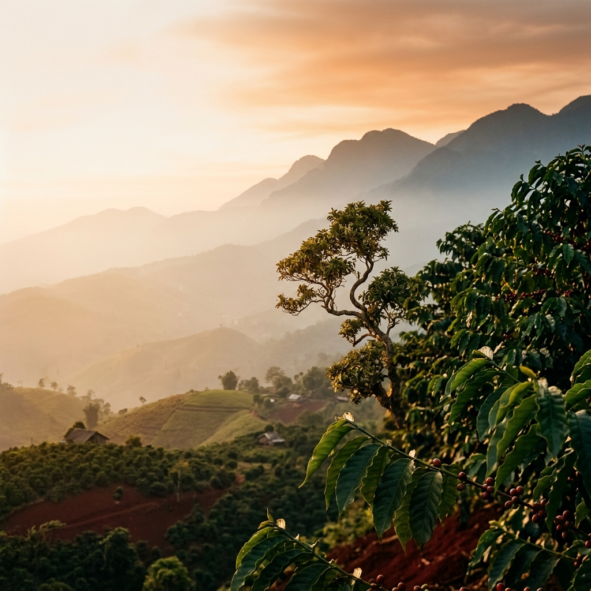
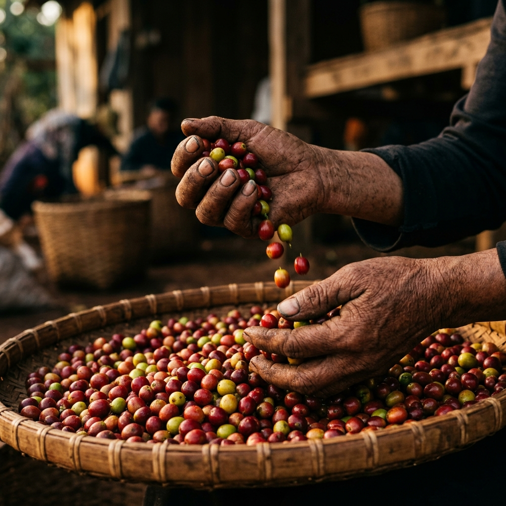
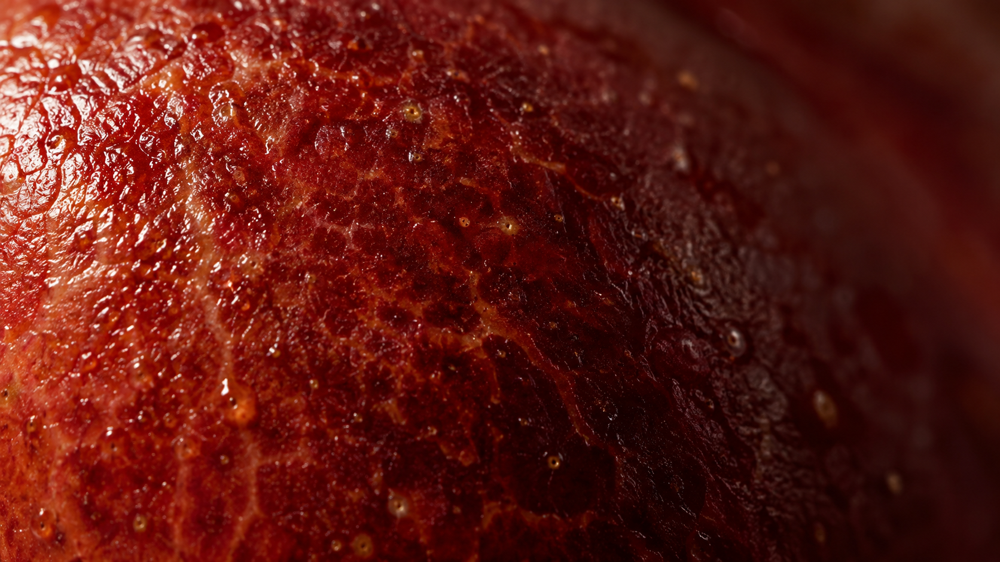
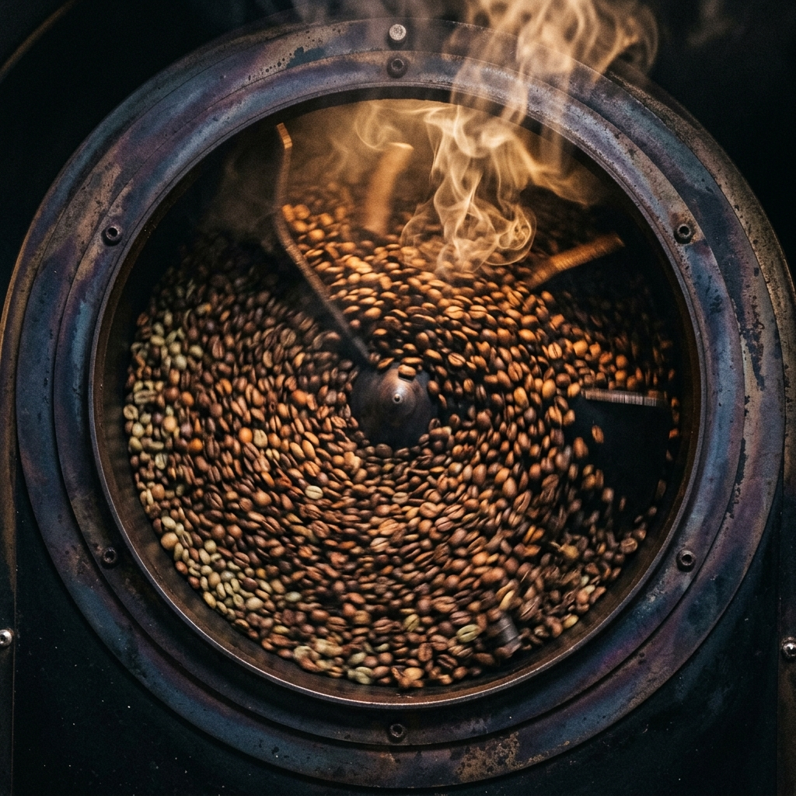
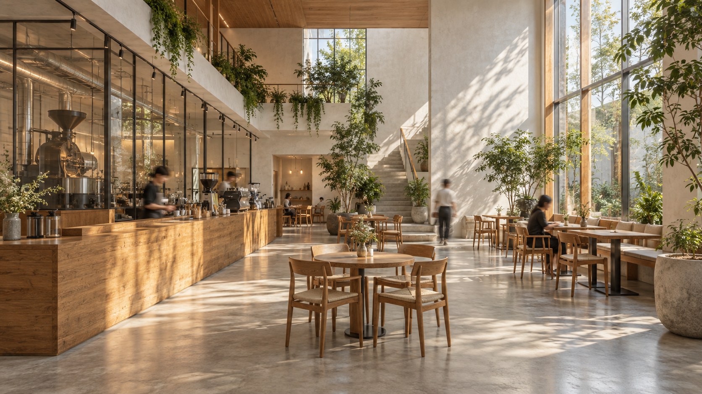
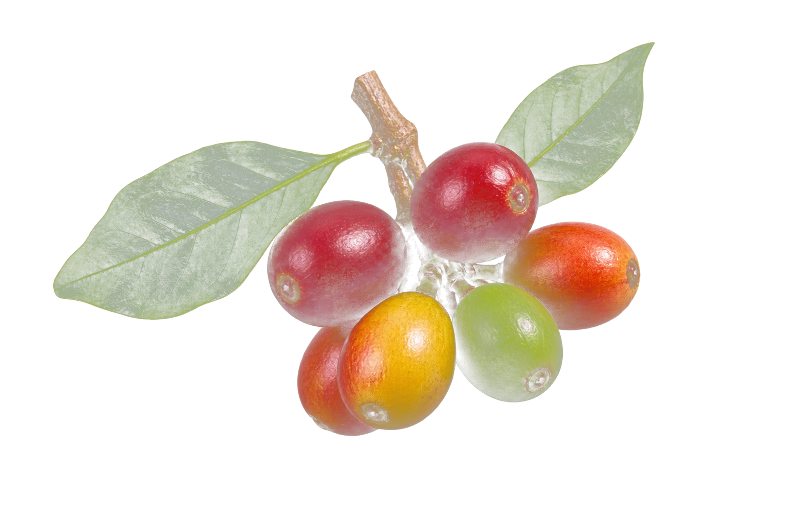
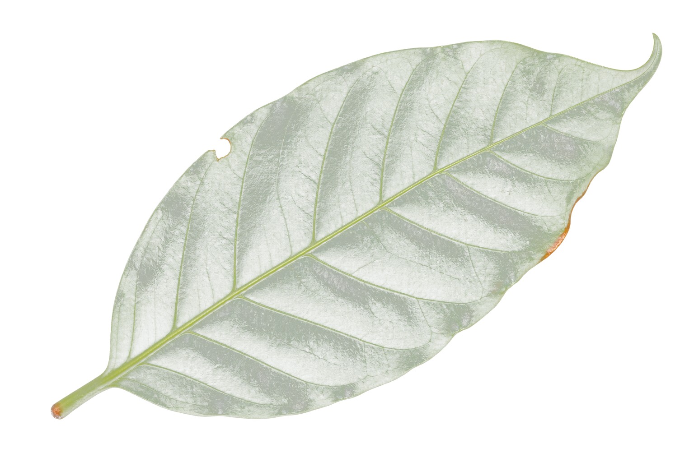
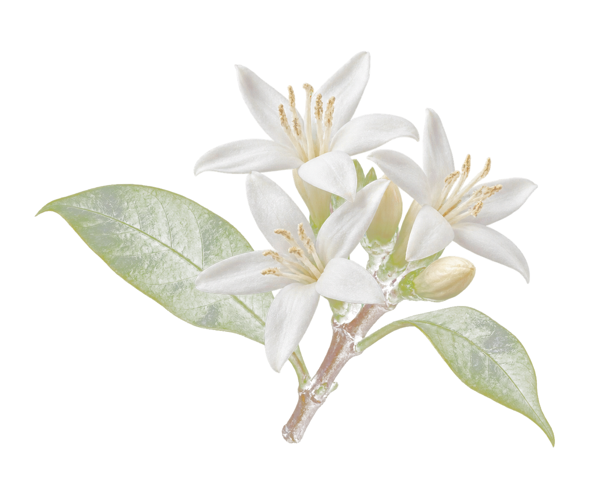
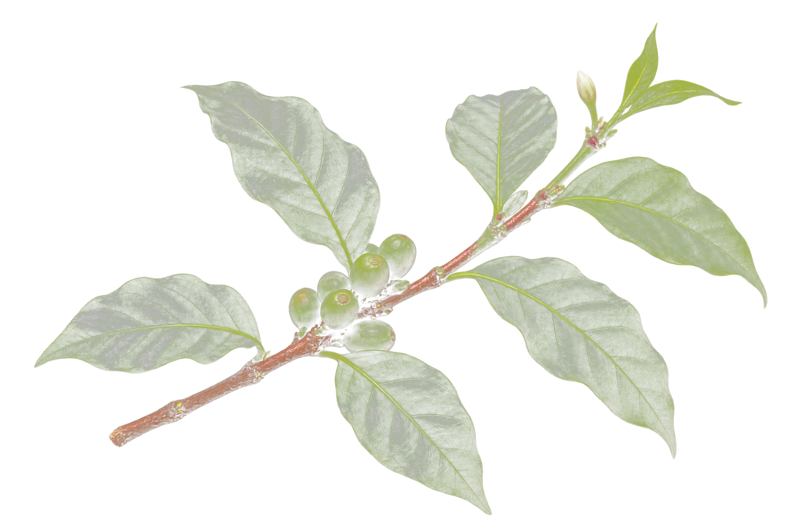
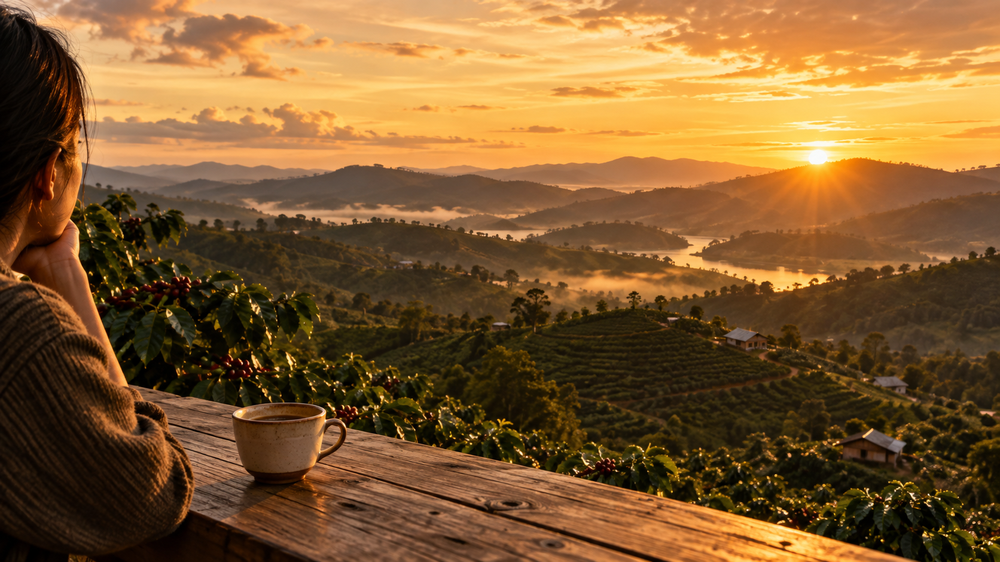

EVERY HALF — COFFEE & COMMUNITY
Tìm một khoảng dừng
cho riêng bạn.
Khám phá những không gian Every Half, thưởng thức cà phê theo cách của bạn và tìm cửa hàng phù hợp cho lần ghé tiếp theo.
Xem kết quả ghi nhận sự kiện01 / Nguồn gốc
Đất đỏ, bàn tay và sự kiên nhẫn.
Hạt cà phê bắt đầu từ những điều rất thật: đất, thời tiết và nhịp chăm sóc của con người. Câu chuyện này tôn trọng phần còn lại của tự nhiên.



02 / Chuyển hoá
Nhiệt đánh thức những tầng hương.
Rang không chỉ là kỹ thuật. Đó là một cách lắng nghe, để từng hạt kể lại nơi nó đã đi qua bằng vị giác riêng.

03 / Không gian
Một nơi để nhịp sống chậm lại.
Nông hộ & tự nhiên
Điều nhỏ bé vẫn tiếp tục lớn lên.





Ghé thăm Every Half
Lần ghé tiếp theo bắt đầu từ đây.
Chọn một góc yên tĩnh, một tách cà phê hợp gu và dành cho mình một nhịp chậm giữa ngày.
Khu vực kiểm tra nội bộ
Chỉ phục vụ kiểm chứng UTM, chuyển hướng và ghi nhận sự kiện cho bài tập học thuật.
Chuỗi chuyển hướng và bảo toàn UTM
Trạng thái tham số UTM của lần bấm CTA gần nhất, tại thời điểm chuyển hướng.
Giả lập sự kiện CTA tuỳ chỉnh
Gửi sự kiện CTA với tham số UTM tuỳ chọn vào log.